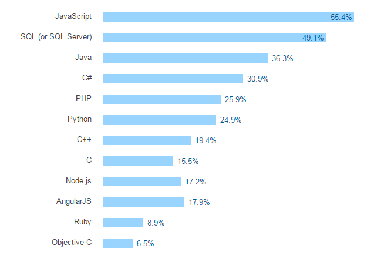
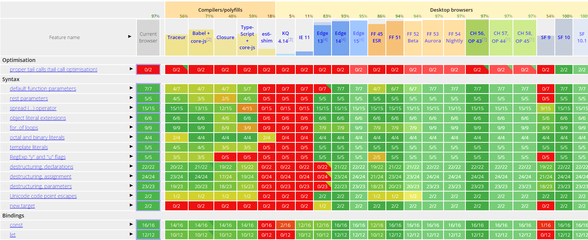

JavaScript
Language du futur ?
Par Valentin DemeusyObjectifs
Objectif
- Présentation JavaScript
- Challenges à relever
- Solutions amenées par la communauté et les évolutions du langage
Qu'est ce que JavaScript ?
Présentation
- Langage interprété à typage faible et dynamique
- Connu comme le langage des pages Web
- Dernière version stable : ECMAScript2016, 17 Juin 2016
- Dernière version : ECMAScript2017
Les moteurs
- Navigateurs :
- Chrome (V8)
- Firefox (Spider Monkey)
- Edge (Chakra)
- Safari (JavaScriptCore)
- Node.js (V8)
Un langage pour tout faire
Développement actif
Popularité
 Pourcentage des développeurs connaissant le langage (Sondage Annuel Stackoverflow)Popularité
 Nombre de tags Overflow en fonction du nombre de projets github (Source)
Nombre de tags Overflow en fonction du nombre de projets github (Source)
Compatibilité
 Table d'implémentation d'ECMAScript dans les différents moteurs (Source)Polyfills
- Pas de numéro de version
- Polyfills pour les "vieux" moteurs
- Babel pour transpiler les nouvelles fonctionnalités
Les reproches
Les reproches
- Pas de typage fort
- Callback Hell
- Mauvaise lisibilité
- Callback Hell
- Syntaxe étrange
- Pas de mémoire partagée
- Lenteur
Typage
Absence de typage fort
- Rend le débuggage difficile
- Autocomplétion difficile
- Exécution plus lente
Alternatives
- Dart
- TypeScript
- asm.js
Efficaces mais requierent un préprocesseur
Exemple TypeScript
class Greeter {
constructor(public greeting: string) { }
greet() {
return "" + this.greeting + "
";
}
};
var greeter = new Greeter("Hello, world!");
document.body.innerHTML = greeter.greet();Callback Hell
Callback Hell
function foo(finalCallback) {
request.get(url1, function(err1, res1) {
if (err1) { return finalCallback(err1); }
request.post(url2, function(err2, res2) {
if (err2) { return finalCallback(err2); }
request.put(url3, function(err3, res3) {
if (err3) { return finalCallback(err3); }
request.del(url4, function(err4, res4) {
// let's stop here
if (err4) { return finalCallback(err4); }
finalCallback(null, "whew all done");
})
})
})
})
}Promises (ES6)
function foo() {
return request.getAsync(url1)
.then(function(res1) {
return request.postAsync(url2);
}).then(function(res2) {
return request.putAsync(url3);
}).then(function(res3) {
return request.delAsync(url4);
}).then(function(res4) {
return "whew all done";
});
}Async/Wait (ES7)
async function foo() {
var res1 = await request.getAsync(url1);
var res2 = await request.getAsync(url2);
var res3 = await request.getAsync(url3);
var res4 = await request.getAsync(url4);
return "whew all done";
}Syntaxe
Classes
function MyObjectA () {}
MyObjectA.prototype = {
myMethod: function () {}
};
var obj = new MyObjectA();Classes
class MyObjectC {
myMethod () {
}
}
var obj = new MyObjectC();Portées des variables
function fn() {
let foo = "bar";
var foo2 = "bar";
if (true) {
let foo; // pas d'erreur, foo === undefined
var foo2; // foo2 est en réalité écrasé !
foo = "qux";
foo2 = "qux";
console.log(foo); // "qux"
console.log(foo2); // "qux"
}
console.log(foo);// "bar"
console.log(foo2); // "qux"
}Modules
- Evite la pollution de l'espace principal
- Node.js
- Webpack
- Browserify
Parallélisme
Web Worker
- Programme s'éxécutant en parallèle dans un environnement indépendant
- Communication par message entre les workers et le main
- Données envoyées par copies ou "transférées"
GPU
- Utilisation du GPU via WebGL
- Les shaders traitent les données en parallèle
- Turbo.js
Shared Array Buffer
// main.js
const worker = new Worker('worker.js');
// To be shared
const sharedBuffer = new SharedArrayBuffer( // (A)
10 * Int32Array.BYTES_PER_ELEMENT); // 10 elements
// Share sharedBuffer with the worker
worker.postMessage({sharedBuffer}); // clone
// Local only
const sharedArray = new Int32Array(sharedBuffer); // (B)Atomics
// Initialization before sharing the Array
Atomics.store(sharedArray, 0, 1);
// main.js
Atomics.store(sharedArray, 0, 2);
// worker.js
while (Atomics.load(sharedArray, 0) === 1) ;
console.log(Atomics.load(sharedArray, 0)); // 2Performances
D'après l'article ES proposal: Shared memory and atomics, les gains de performances sont linéaires avec le nombre de web worker jusqu'à 4 workers avec l'algorithme testé. Au delà les performances s'améliorent plus modestement.Optimisation
asm.js
- Sous ensemble très restraint de JavaScript, pas d'objets
- Evite le typage dynamique
- Permet de réaliser des optimisations de bas niveau
- Ahead-Of-Time (AOT) VS Just-In-Time (JIT)
- Compilation de C++ en asm.js
asm.js Exemple
function compiledCalculation() {
var x = f()|0; // x is a 32-bit value
var y = g()|0; // so is y
return (x+y)|0; // 32-bit addition, no type or overflow checks
}asm.js Benchmark

WebAssembly
- Format binaire d'asm.js
- Moins de temps de chargement
- Moins de temps de parsing
- Même espace sémantique que JavaScript, permet les appels entre JavaScript et WASM
Performance
- Parsing : jusqu'à 20 fois meilleur
- Chargement : 1,5-3 fois meilleur
Conclusion
Conclusion
- Omniprésence
- Evolution rapide